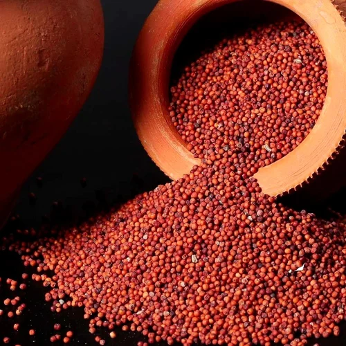
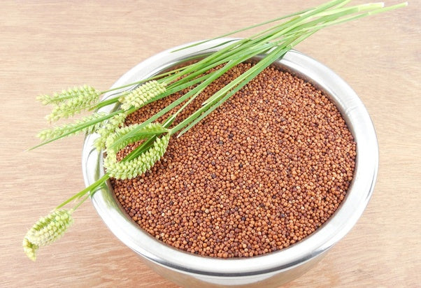
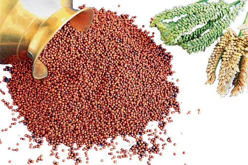

Ragi
Fresh cereals directly from farmers
₹90
MRP (Inclusive of all taxes)
Product Details
- Category: Millets
- Weight: 100 g
- Quality: Premium Quality
- Origin: Local Farmers
- Storage: Store in a cool, dry place
- Shelf Life: 6-12 months
About this product
Ragi (also known as finger millet) is a highly nutritious grain rich in calcium, fiber, and essential minerals. It is widely used in Indian cooking and is valued for its health benefits and natural goodness. Sourced from trusted farmers, it ensures natural taste, purity, and premium quality.
Health Benefits
- Helps control blood sugar levels
- Supports healthy digestion
- Rich in calcium and essential nutrients
- Boosts bone health and overall wellness